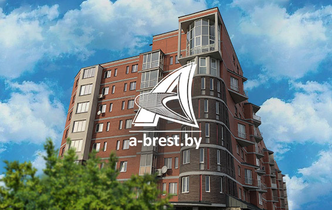

Услуги
Разработка сайтов
Разрабатываем сайты для любых задач. Используем в разработке платформы Tilda, Сайты.Битрикс24, MODx, 1с-Битрикс, Symfony/Laravel.
Продвижение сайтов
и интернет-маркетинг
Подбираем индивидуальный набор инструментов по увеличение входящих обращений в ваш отдел продаж. Знаем где 50% бюджеты тратиться впустую!
Автоматизация
бизнес-процессов
Внедряем как готовые решения от Битрикс24, так и дорабатываем модули под ваши задачи. Большой опыт разработки с нуля ERP-систем на базе Symfony.
Дизайн
и айдентика
Подберём запоминающееся название для вашего бренда и упакуем его графически. Работаем под ключ от нейминга до полиграфии.
Наша гордость

Увеличили продажи на 40-70% за 1,5 года в агентстве недвижимости Альтернатива Брест
Рост продаж
40-70%
Рост трафика
900%
Работаем с
2018 года
Как в конкурентной нише b2b получать заявки в 2 раза дешевле и в 4 раза больше. Кейс Дом.ru Бизнес
Снизили цену лида
-250%
Кол-во лидов
+400%
Качество лидов
+1000%